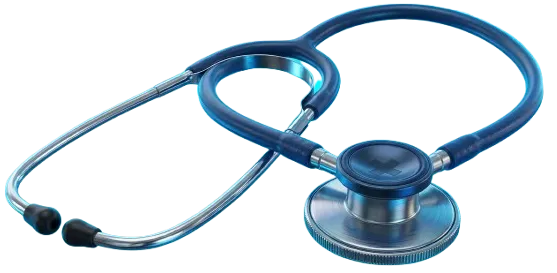
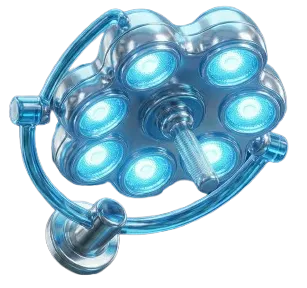
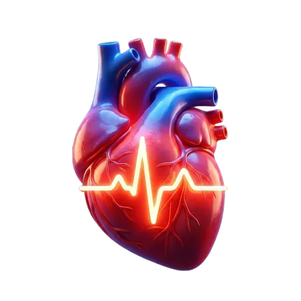
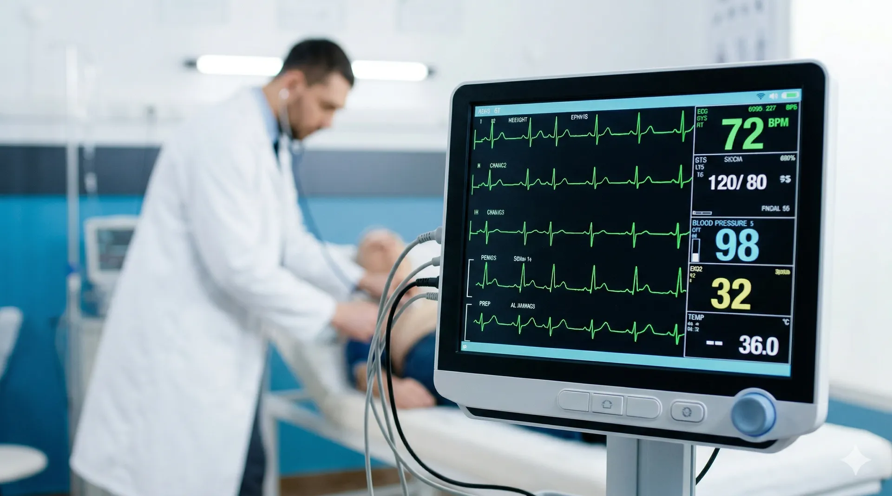
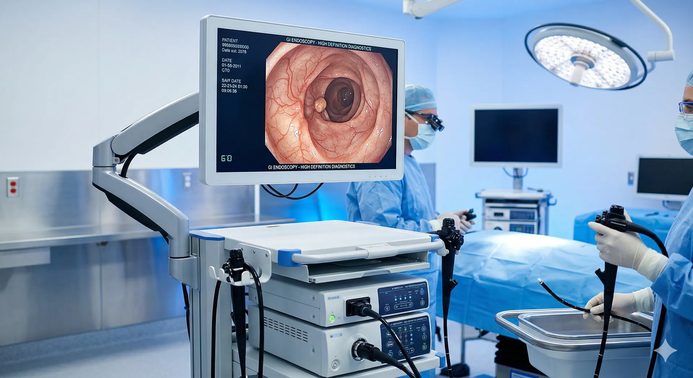
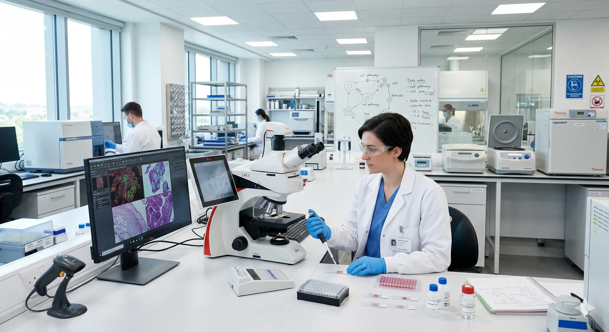
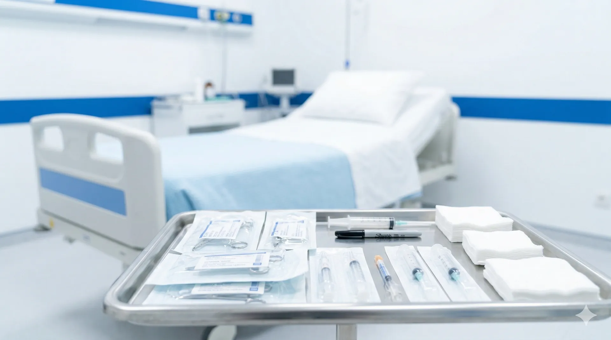
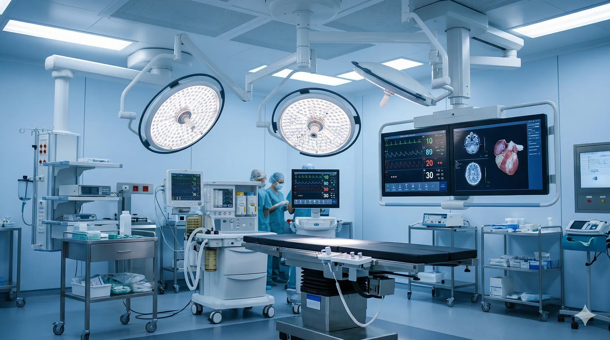
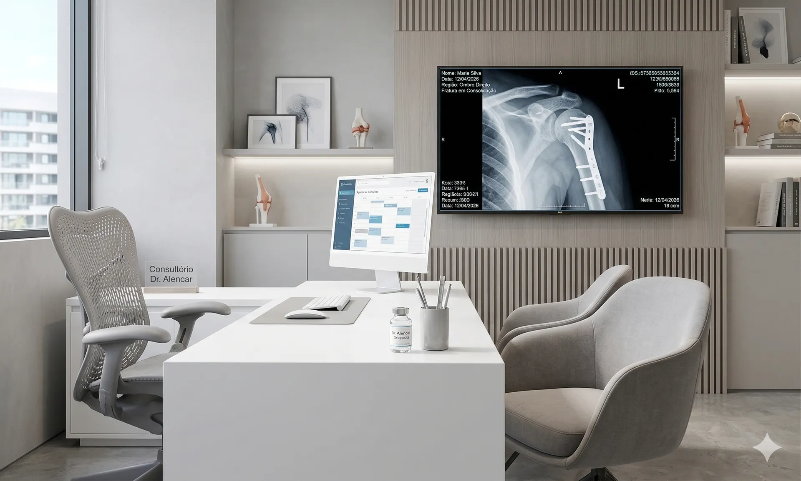
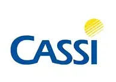

Hospital Dia com foco em cirurgias. Mais de 40 médicos especialistas, 24 especialidades médicas.
Do diagnóstico à recuperação, oferecemos uma estrutura completa de atendimento ambulatorial e cirúrgico com humanização em cada etapa do cuidado.

Mais de 40 médicos especialistas selecionados criteriosamente, comprometidos com o atendimento humanizado e os mais altos padrões.

Estrutura equipada para realizar mais de 20 tipos de procedimentos, com segurança e tecnologia avançada em cada etapa.

Exames realizados com equipamentos de última geração, garantindo resultados rápidos e confiáveis.
Modelo Hospital Dia: consulta, exame e cirurgia no mesmo dia. Você resolve sua saúde e volta para casa.
Atendimento que acolhe e cuida.
Nossa recepção foi planejada para oferecer o máximo de conforto desde o primeiro contato. No Hospital Dia, acreditamos que o bem-estar começa em um ambiente aconchegante e um atendimento atencioso.
Combinamos tecnologia de ponta com um olhar humanizado, garantindo que sua jornada conosco seja tranquila, ágil e focada na sua recuperação.
Profissionais qualificados e prontos para oferecer o melhor diagnóstico e tratamento.
Equipamentos de ponta e protocolos rigorosos para resultados precisos sem sair do hospital.

Eletrocardiograma (ECG), Holter 24h, MAPA 24h, Ecocardiograma com Strain.

Endoscopia Digestiva Alta, Colonoscopia, Retossigmoidoscopia, Videonasoscopia.
Abdômen Total, Endovaginal, Mamas, Próstata, Tireoide, Pélvica e Obstétrica.

Punções Guiadas de Tireoide, Biópsia de Mama, Próstata e exames laboratoriais.
Nossa estrutura permite que você realize o procedimento e retorne para casa no mesmo dia.




Tudo o que você precisa saber sobre o atendimento no Hospital Dia.